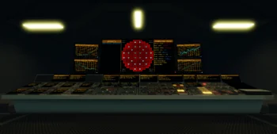
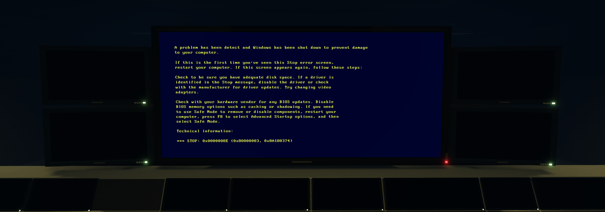

Shutdown Procedure
Instructions for safely shutting down the reactor.
Learn moreIn the event of an emergency, it is crucial to follow established protocols to ensure the safety of personnel and the reactor. This section outlines the steps to take in various emergency scenarios.
Currently, the only true emergency the reactor can experience is supercriticality. If this occurs, begin by assesing the situation. The following is a table detailing what you should do in eachn situation.
| Thermal Generation | Recommended Action | Risk Level |
|---|---|---|
| ≤ 5GW/s | Increase Boric Acid concentration or insert control rods to lower thermal generation to less than 5GW/s. | II |
| ≤ 6GW/s | Scram the reactor immediately and initiate the LPCI and ECCS immediately. | III |
| < 10GW/s and all safety systems active | There is nothing you can do at this stage and the core will soon experience a catastrophic failure. The best course of action is to close the heat exchanger valves in order to save the turbines from blowing up as well. | V |

Image of what a meltdown looks like from the control room perspective
Other important procedures when it comes to reactor operations.
Instructions for safely shutting down the reactor.
Learn more
Common issues, how to identify and resolve them.
Learn more
Procedures for regular maintenance and inspection of the reactor.
Learn more
Procedures for handling emergency situations in the reactor.
Learn more